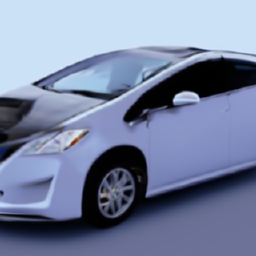
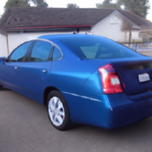

Improving the Robustness of AI-generated Content Detection
On the Way towards Better Artificial Content Detectors
With growing abilities of generative models, artificial content detection becomes an increasingly important and difficult task. We focus on the robustness of AI-generated content detectors, namely their ability to transfer to unseen generators or semantic domains. First, we analyze existing AI-generated image detection methods and show how to train interpretable state of the art classifiers on top of pretrained embeddings in the semantic space and choose the training set for the best robustness. For the text domain, we propose two novel methods to clear harmful subspaces from the embedding space. Our best method based on removing the components of the embedding vector increases the mean out-of-distribution (OOD) classification score by up to 4% for cross-domain transfer on the text domain; our best method based on head pruning increases the mean out-of-distribution (OOD) classification score by up to 7%.On this webpage we provide suplementoral material for our article "Improving the Robustness of AI-generated Content Detection" that we submitted to the Conference. Here we present throughout description of all datasets that we used in our experiments, samples of generated images, and other information that didn't fit into the article of limited
Article and Source Code
Our articleArticle "Improving the Robustness of AI-generated Content Detection" is currently under review. When it is completed, here will be a link to the final version of the paper. |
|
Our repositoryGithub-repository with data and code to reproduce experiments from our paper or try our methods on a completely new tasks/datasets. Right now the repository is under constuction |
Used Datasets
In our work we used several publicaly available datasets. Here we would like to thank authors of the datasers and provide quick links to the websites of those projects.
Fake image detection dataset
- Generative Images Dataset - dataset that we created during research for this paper.
We will publish it for open access after anonymity period for the submission ends. It was constructed in two steps
1) We downloaded (image, text) pairs from the LAION-Aestethics dataset with the images aesthetics score of at least 4.5.
LAION is an open dataset with a very diverse set of images; we filter by the aesthetics score to obtain images of at least moderate visual quality and thus make the distributions of real and generated images closer, as modern text-to-image models generally produce images of high visual quality.
2) Based on the text prompts, we generate two images for every prompt using four modern diffusion-based text-to-image models:
- DALL-E mini
- GLIDE with and without CLIP guidance
- Stable Diffusion-v1.4 with 50 or 200 generation steps
- Kandinsky-v2 with 20 or 100 generation steps
- to train and test fake image detection models in different settings;
- testing the models’ robustness across different generators;
- to see how a fake image detection model’s performance is affected by the generative model’s architecture or the number of steps used to generate an image;
- to ensure the stability of a fake image detection model by testing on two subsets of generated images produced from the same prompts;
- to compare the performance of different text-to-image models.
Artificial text detection datasets
- SemEval 2024 - dataset provided at SemEval 2024 contest (semeval.github.io/SemEval2024). Covers five domains
(text types) for text generation:
- Wikipedia articles - Wikipedia articles for various topics
- Reddit - general purpose question answering
- WikiHow - question answering from WikiHow
- PeerRead - peer reviews of scientific articles
- ArXiv - pared texts of scientific articles from ArXiv database
- GPT-3.5D - dataset provided by the authors of the paper Intrinsic Dimension Estimation for Robust Detection of AI-Generated Texts.
It contains texts from three domains:
- Wikipedia articles - Wikipedia articles for various topics 2,800 genuine Wikipedia articles and 2,800 texts generated by AI from the first two sentences of those articles.
- Reddit - general purpose question answering 2,800 human-written texts and 2,800 AI-generated answers for the same questions.
- StackExchange - engeneering and scientific-related question answering 3,000 human-written texts and 3,000 AI-generated answers for the same questions.
- GPT-3D - we expanded GPT-3.5D by adding 300 texts generated by GPT4 to each of the three domains. These texts were generated with full accordance to the procedures from GPT-3.5D. This dataset (GPT 4 generations and corresponding human texts) will be available in our repository
Examples of Generated Images
Here we present few samples from our Generative Images Dataset. For each genuine image picked from LAION dataset (Original image) we generated several "artificial counterparts" using various generative models. Here we provide them — albeit only one (from two) output image per model — together with the textual prompts that were used as input to generative models. Different images can be celected from the drop-down list on the right.
toyota brings back the solar panel on the plug in prius prime but rh electrek co Toyota Prius V Toyota Prius Panoramic Roof
-
Original image
-
DALL-E mini
- 
GLIDE
(with CLIP guidance)
- 
GLIDE
(without CLIP guidance)
-
Stable Diffusion v1.4
(50 steps)
-
Stable diffusion v1.4
(200 steps)
-
Kandinsky-v2
(20 steps)
-
Kandinsky-v2
(100 steps)
Contact information
When the anonymity period for the review ends, here will be our contacts
Place for the e-mail address